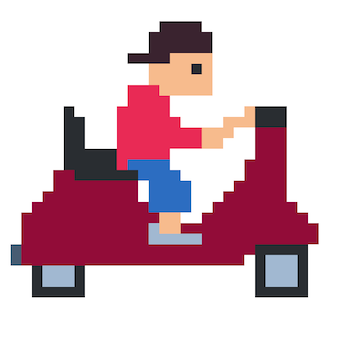

Github
Created an ever-evolving website to use as my online portfolio and resume (a.k.a this website you are viewing). Currently hosted on Github.
Paper Route!
GithubGame Download

Created a small game as a final project for the course COSC 3P98 - Computer Graphics at Brock University using the Unity Engine. The game is loosely based off of the old arcade game Paperboy where the player has to avoid obstacles while properly delivering paper to the correct addresses. Uses C# and features audio and custom-made art elements.